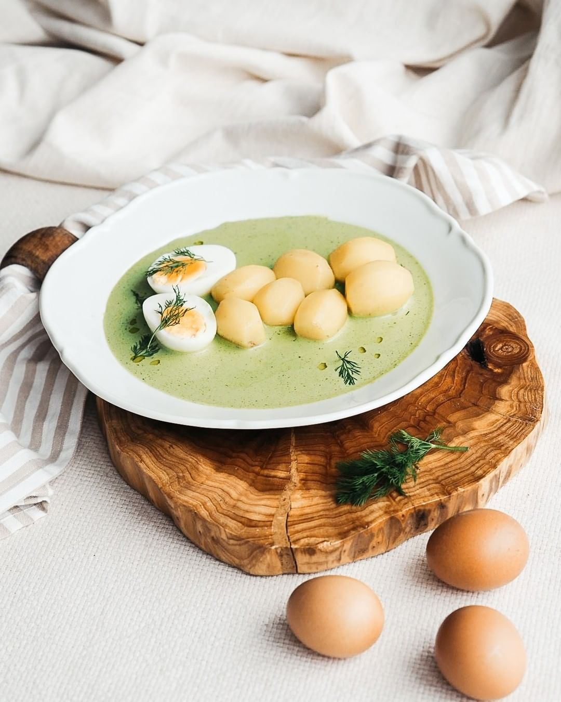

Kôprová omáčka podľa @bezpracekolace.cz — Normy Jedál
Odlehčená jarní varianta koprové omáčky - místo masa vajíčko, místo knedlíků brambory. Ale nebojte, pro milovníky klasiky máme i tradiční verzi:)
-
-
-
#bezpracekolace #rozvozjidla #uvarsisam #kvalitnisuroviny #jednoduchejidlo #plating #foodstyling #stonescatering #jidlo #jidlobezprace #rychlejidlo #dnesvarim #foodinspirace #praguefood #praguetips #jidloodsefkuchare #fooddelivery #finedinningprague #hostina #koprovka #koprovaomacka